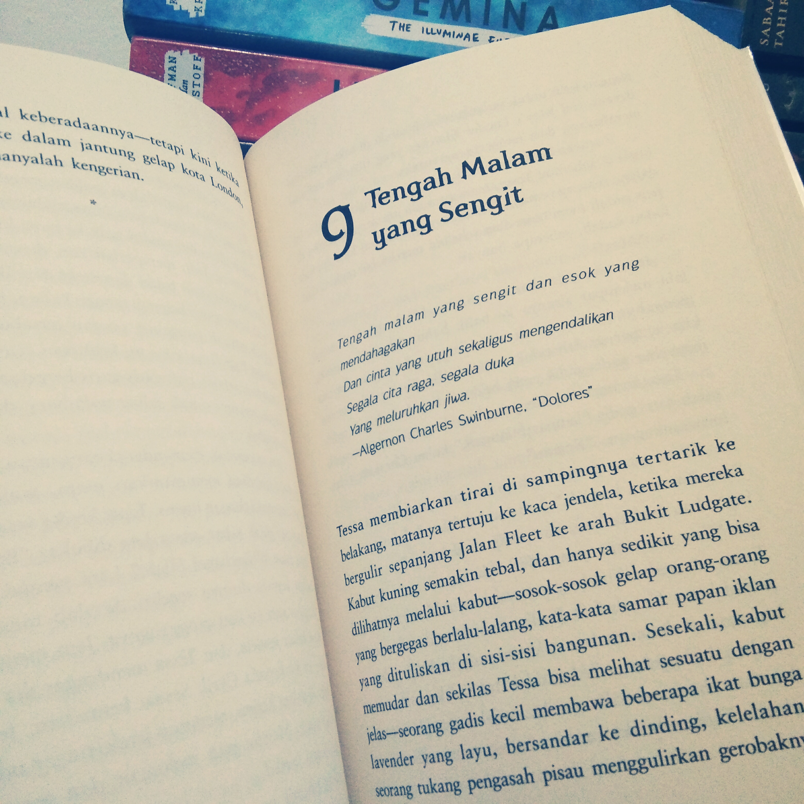

What I'm Doing Now ?

Project:
- Project membuat program C++ dengan studi kasus hotel management bernama "Onyx Hotel" bersama dua teman saya.
- Project membuat program C++ dengan studi kasus pemesanan tiket pesawat bernama "Nusantara Travel" bersama dua teman saya.
Belajar:
Sedang mempelajari bahasa Pemrograman: HTML, CSS, PHP, MySQL, Javascript, Python, C++ dasar sebagai pemula yang masih baru dalam menekuni dunia programmer.
Di Waktu Luang:
Membaca buku, berselancar internet, berkunjung ke toko buku, berkumpul dengan teman-teman, membaca komentar-komentar netizen warga +62 di Instagram, curhatan dan drama di Twitter, maupun kasus-kasus meme di Facebook.